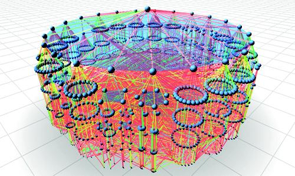

--- 
title: Applications
homec: home 
tutorialc: tutorial 
applicationsc: applications selected applicationsSelected
benchmarksc: benchmarks
downloadc: download
toolsc: tools
helpc: help
---

<div id="applicationContainer"> 

<a name="NAMD"></a>
<div id="NAMD" class="app"><h2>Molecular Dynamics - NAMD</h2>
<p align="justify"> NAMD, recipient of a <b>2002 Gordon Bell Award</b>, is a parallel molecular
dynamics application designed for high-performance simulation of large biomolecular
systems. NAMD is a result of many years of collaboration between Prof.
Kale, Prof. Robert D. Skeel, and Prof. Klaus J.
Schulten at the Theoretical and Computational Biophysics Group (TCBG) of Beckman
Institute. 
</p>

<figure>
	
</figure>

<p align="justify">
NAMD is distributed
free of charge and includes source code.  Charm++, developed by Prof. Kale and
co-workers, simplifies parallel programming and provides automatic load
balancing, which was crucial to the performance of NAMD.  It is used by tens of
thousands of biophysical researchers with production versions installed on most
supercomputing platforms.  
NAMD scales to hundreds of cores for small simulations and beyond 300,000
cores for the largest simulations. See
the <a href="http://www.ks.uiuc.edu/Research/namd/namd.html">TCBG NAMD</a> web
site for NIH supported download and tutorial instructions. </p>

<p align="justify"> The dynamic components of NAMD are implemented in the Charm++ parallel
language. It is composed of collections of C++ objects, which communicate by
remotely invoking methods on other objects. This supports the multi-partition
decompositions in NAMD. Also data-driven execution adaptively overlaps
communication and computation. Finally, NAMD benefits from Charm++'s load
balancing framework to achieve unsurpassed parallel performance.
See <a href="http://charm.cs.uiuc.edu/research/moldyn">PPL NAMD</a> research
page for more details. </p>
</div>

<hr>
<a name="ChaNGa"></a>
<div id="ChaNGa" class="app"><h2>N-Body Cosmological Simulations - ChaNGa</h2>

<figure>
	
</figure>

<p align="justify"> ChaNGa (Charm++ N-Body Gravity Simulator) is a cosmological
simulator to study formation of galaxies and other large scale structures
in the Universe. It is a result of interdisciplinary collaboration between Prof.
Kale, Prof. Thomas Quinn of University of
Washington and Prof. Orion Lawlor of University of Alaska Fairbanks. 
<!--While
there is a multitude of existing N-Body implementations, many of these are
"toy" programs which were written with an eye to study performance of parallel
tree codes, rather than as scientific software which can provide useful insight
to astrophysicists. In contrast to these, -->
ChaNGa is a production code with the
features required for accurate simulation, including canonical, comoving
coordinates with a symplectic integrator to efficiently handle cosmological
dynamics, individual and adaptive time steps, periodic boundary conditions
using Ewald summation, and Smooth Particle Hydrodynamics (SPH) for adiabatic
gas.</p>

<p align="justify"> ChaNGa implements the well-known Barnes-Hut algorithm, which has N log N
computational complexity, organizing the particles involved in the simulation
into a tree based on Oct, Orthogonal Recursive Bisection (ORB), or SFC
decompositions. In order to compute the pair interaction between particles and
collections of particles on different processors, parts of the tree needed for
the computation are imported from the remote processors which own them. 
<!--To
avoid an explosion in the memory used for large data sets, we structure the
import so that the external nodes are transferred only once and used by all the
particles which need them on a given processor. For this reason, a CacheManager
has been built, with the functionality of a software cache.-->
ChaNGa uses the Charm++ Salsa parallel visualization and analysis
tool. Visualization in the context of cosmology involves a large amount of data,
possibly spread over multiple processors. 
<!--Salsa uses the client server model in
Charm++ to interact with code running on multiple processors. The visualizer
allows the user to zoom in and out, pan and rotate the image, which result in
update requests sent from the visualizer code to the processors running the
parallel program.-->
</p>

<p align="justify">ChaNGa has been scaled to 32K cores, and has been ported to
GPU clusters. Over time, ChaNGa is being actively developed and improved, with an eye
for efficient utilization and scaling of current and future supercomputing
systems.
See <a
href="http://librarian.phys.washington.edu/astro/index.php/Research:ChaNGa">ChaNGa</a> web
site for download and instructions. 
</p>


<hr>
<a name="CharmEpisimdemics"></a>
<div id="CharmEpisimdemics" class="app"><h2>Contagion in Social Networks - Episimdemics </h2>

<figure>
	
	<!--<figcaption>Image courtesy SDSC</figcaption>-->
</figure>

<p align="justify">
The study of contagion effects in extremely large social networks, such as
the spread of disease pathogens through a population, is critical to many areas
of our world.
Scaling Agent-based Simulation of Contagion Diffusion over Dynamic Networks on
Petascale Machines
Applications that model dynamical systems involve large scale, ir-
regular graph processing. These applications are difficult to scale
due to the evolutionary nature of their workload, irregular commu-
nication and load imbalance. EpiSimdemics implements a graph
based system that captures dynamics among co-evolving entities,
while simulating contagious diffusion in extremely large and real-
istic social contact networks. EpiSimdemics relies on individual-
based models, thus allowing studies in great detail. This paper
presents a novel implementation of EpiSimdemics in Charm++,
which enables future research by social, biological and compu-
tational scientists at unprecedented data and system scales. We
present new methods for application-specific decomposition of graph
data and predictive dynamic load migration and demonstrate the
effectiveness of these methods on Cray XE6/XK7 and IBM Blue
Gene/Q.
</p>
<br>
</div>


<hr>
<a name="OpenAtom"></a>
<div id="OpenAtom" class="app"><h2>Ab initio Molecular Dynamics - OpenAtom</h2>

<figure>
	
</figure>
<p align="justify"> Many important problems in material science, chemistry, solid-state
physics, and biophysics require a modeling approach based on fundamental
quantum mechanical principles. A particular approach that has proven to be
relatively efficient and useful is Car-Parrinello ab initio molecular dynamics
(CPAIMD). Parallelization of this approach beyond a few hundred processors is
challenging, due to the complex dependencies among various subcomputations,
which lead to complex communication optimization and load balancing
problems. We have parallelized CPAIMD using Charm++. The computation is modeled
using a large number of virtual processors, which are mapped flexibly to
available processors with assistance from the Charm++ runtime system.  See
the <a href="http://charm.cs.uiuc.edu/OpenAtom/">OpenAtom</a> web site for more
details.<p>
<br>
</div>
<hr>

<a name="CSE"></a>
<div id="CSE" class="app"><h2>Computational Science and Engineering Applications - CSE</h2>
<p align="justify">Professor P. Geubelle and S. Breitenfeld of
the <a href="http://ssm7.ae.uiuc.edu/PHG_GROUP/"> Computational Solid Mechanics
Group</a> have developed CrackProp, an explicit Finite Element method
simulation of viscoelastic and plasto-elastic mechanics. The simulation tracks
conventional volumentric elements, coupled by flat "cohesive" interface
elements using the Charm++ <a href="http://charm.cs.uiuc.edu/fem/">Finite
Element Framework</a>.
</p>

<figure>
	
</figure>

<p align="justify">Professor J. Dantzig and Jun-Ho Jeong of the Solidification Processing Lab
have parallelized their dendritic growth metal solidification application using
the Charm++ Finite Element Framework. This adaptive mesh, implicit solver fluid
dynamics application is quite different from the explicit structures codes
normally used.</p>

<p align="justify">The framework handles the changes to the adaptive mesh by re-assembling the
parallel mesh, repartitioning, and redistributing the mesh pieces. Since the
mesh changes only rarely, this does not significantly impact the speed of the
simulation. The implicit solvers are implemented using the conjugate gradient
method, which solves a global matrix using local operations.</p>

<br>
</div>

<a name="CSAR"></a>
<div id="CSAR" class="app"><h2>Advanced Rocket Simulation</h2>

<figure>
	
</figure>

<p align="justify">
The principal goal
of <a href="http://www.csar.uiuc.edu/">Center for Simulation of Advanced Rockets (CSAR)</a> 
is detailed, integrated, whole-system simulation of solid propellant
rockets under both normal and abnormal operating conditions. 

Various components of the integrated rocket simulation codes, ROCFLO, ROCSOLID,
and ROCFACE have been ported to Adaptive MPI with minimal changes and with
little effort, providing them with automatic load balancing capabilities. The
AMPI implementation also enhances the modularity of rocket codes by using
separate sets of virtual processors for ROCFLO and ROCSOLID. Based on a similar
programming paradigm, a prototype finite element method (FEM) framework has been
developed. Although originally designed for finite element applications, it is
general enough for unstructured mesh applications. Using the FEM framework, code
developers write only sequential code that implements the node and
element-specific computations of the FEM solver, while the details of
parallelism such as partitioning, communication, and load balancing are taken
care of by the framework. 
</p>


</div>

</div>

<a name="PSTIP"></a>
<div id="pstip" class="app"><h2>PSTIP - Parallel Stochastic Integer Programming</h2>
<figure>
	
</figure>

<p align="justify">Stochastic optimization is used for optimal resource allocation under 
uncertainty. Application of stochastic programming spans a diverse set of fields
ranging from production, financial modeling, transportation (road as well as air), 
supply chain and scheduling to environmental and pollution control, telecommunications 
and electricity. When integer optimization is required, then branch-and-bound are accepted
norms.</p>

<p align="justify">
Unlike typical, iterative scientific applications, this application has
some very interesting characteristics that make it challenging
to realize a scalable design. The total amount of computation
required to find optima is not constant across multiple runs.
This challenges traditional thinking about scalability and parallel
efficiency. It also implies that reducing idle time does not imply
quicker runs. The sequential grains of computation are quite
coarse. They display a wide variation and unpredictability in
sizes. The structure of the branch-and-bound search tree is
sensitive to several factors, any of which can significantly alter the
search tree causing longer times to solution.</p>

<p>
Our parallel design exploits simultaneous parallelism
on two different fronts - parallel exploration of the branch-and-bound tree vertices
tree and parallel evaluation of scenarios. Our designs show strong scaling to
hundreds of cores. See the <a href="http://charm.cs.illinois.edu/newPapers/13-08/paper.pdf">report</a> 
for more details. </p>
</p>

</div>
